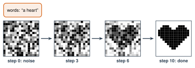

3.7 - Making Pictures with AI
Type “an orange cat reading a book in a library, watercolor.” Wait a few seconds. A picture appears. Nobody drew it. It didn’t exist before.
How? The AI starts with static, like an old TV with no signal. Then it removes a little static at a time, again and again, until a picture is left.
Today’s Plan (40 minutes)
- 🔥 Warm Up Find the picture in the static 6 min
- 👥 Learn Together From noise to picture 10 min
- 🛠️ Try It Watch noise become a picture 18 min
- 💬 Talk About It Is it art? 6 min
- 🖼️ image generator: an AI that makes a new picture from words
- 📺 noise: random dots with no picture in them, like TV static
- 🌫️ diffusion: making a picture by removing noise a little at a time
Printable lesson sheet - the sheet you write on today.
🔥 Warm Up
Look at the first three squares on your sheet. Cover the last one. At which step can you guess the picture? Write your guess.
At step 0, there’s no picture at all. It’s only noise. At step 3, maybe you see a dark shape. At step 6, most people can see it. The details come last.
An image generator works the same way, but it doesn’t know the picture ahead of time. It has to guess it.
👥 Learn Together
3.7.1 - From Noise to Picture

An image generator learns in two parts.
Training. People collect millions of pictures, each with words that describe it. The computer adds noise to each picture, a little at a time, until only noise is left. A neural network practices guessing: which part of this is noise? It practices millions of times.
Making a picture. Now you type words. The AI starts with pure noise. The network guesses which part is noise, and removes a little of it. It does this again and again, often 20 to 50 times. Your words guide every guess. This is called diffusion.
The AI doesn’t copy a picture or glue pieces together. It starts from noise and removes it, step by step, guided by what it learned from millions of pictures.
3.7.2 - Why Every Picture Is Different
Every time you press the button, the AI starts from new random noise. So the same prompt makes a different picture each time. (Like the chatbot that picks by chance, in Lesson 2.9.)
🛠️ Try It
3.7.3 - Watch Noise Become a Picture
Work with a partner. (In a big class, groups of 3 share one computer.)
- Choose words. Press Remove some noise one step at a time. At which step can you guess the picture?
- Press New noise with the same words. Play it. What changed? What stayed the same?
- Keep the noise. Choose new words. Play it. What changed?
This shows the idea, but it cheats. This demo already has the finished picture (an emoji), and it mixes the noise away. A real image generator doesn’t have the picture. Its neural network has to guess what to remove, using what it learned from millions of pictures.
Don’t make AI pictures of classmates, teachers, or anyone real. A fake picture of a real person can hurt them, even as a joke. (More in Lesson 4.3.)
💬 Talk About It
Is a picture made by AI art? Who should get the credit: the person who wrote the prompt, the company that made the AI, or the artists whose pictures trained it?
- The noise turned into a picture when …
- The same prompt made different pictures because …
- An AI picture (is / isn’t) art, because …
- The credit should go to … , because …
🚀 Go Further
Work with a partner, or in a group of 3. Picture tools have a limit on how many pictures a class can make, so each pair shares turns. If your class AI tool can’t make pictures today, give your prompts to your teacher. Your teacher makes them on the projector.
A good picture prompt says what you want to see:
| Part | Question | Example |
|---|---|---|
| Subject | What is in the picture? | a small orange cat |
| Action | What is it doing? | reading a book |
| Place | Where is it? When? | in a library at night |
| Style | What should it look like? | watercolor painting |
| Details | Colors? Light? | warm yellow light |
- Write a picture prompt on your sheet. Use all 5 parts.
- Make the picture two times with the same prompt. How are the two pictures different?
- Change only the style. Make it again. What changed?
- Find one mistake in a picture. Write it down.
Small class: every pair gets 3 pictures. Big class: play “Describe It.” One student from each team sees a secret picture. The team writes a prompt from the description and makes one picture. Whose is closest?
Choose one subject, like “a bus at our school.” Write 5 prompts for it in 5 styles: photo, cartoon, pixel art, oil painting, and a style from your home country. Make the 5 pictures, or give the prompts to your teacher. Make a poster of the 5 pictures.
Write prompts for “a doctor,” “a nurse,” “a scientist,” and “a basketball player.” Your teacher makes each one 4 times. Count who the AI shows: men or women, young or old, skin colors. What do you notice? Bring your results to Lesson 4.2.
🔭 Explore More: what image generators get wrong, and the counting test. Read it on your own, if you want to learn more.